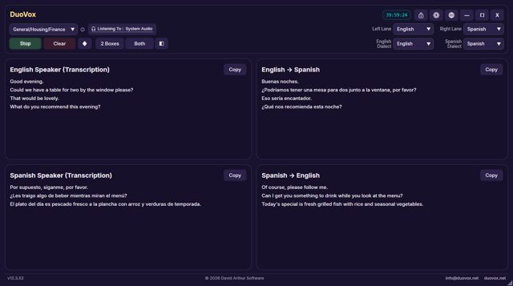
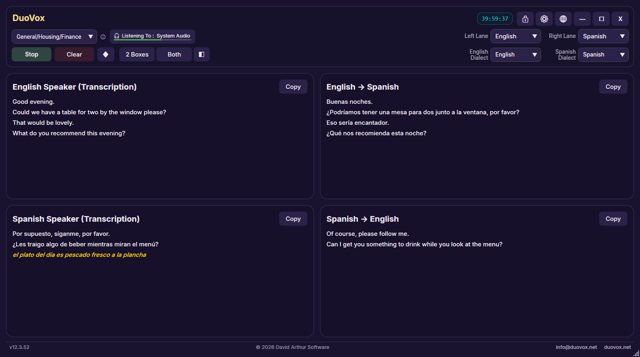
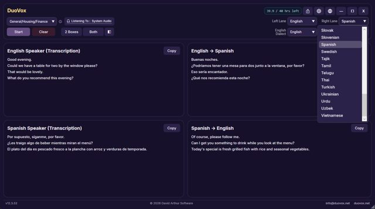
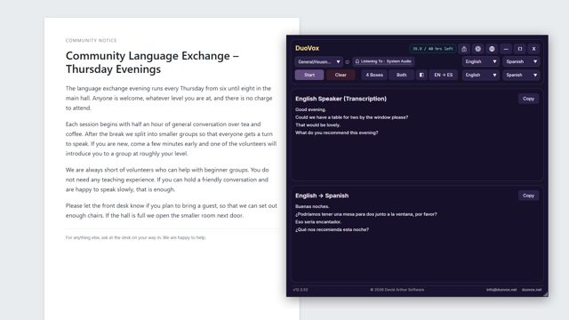
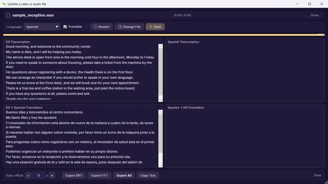
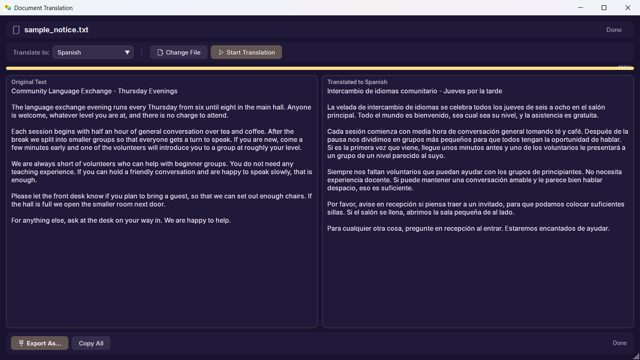
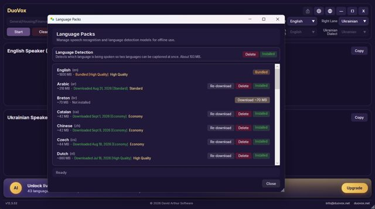
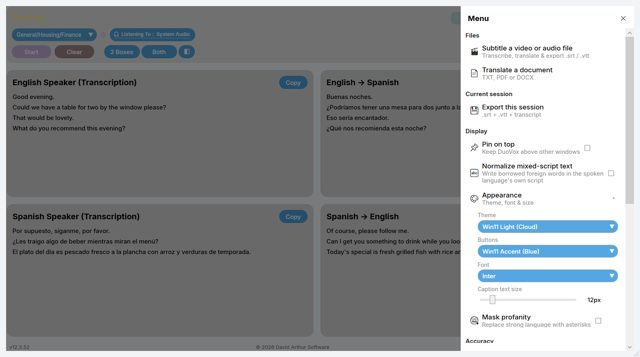
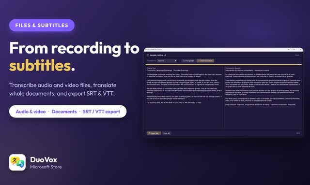
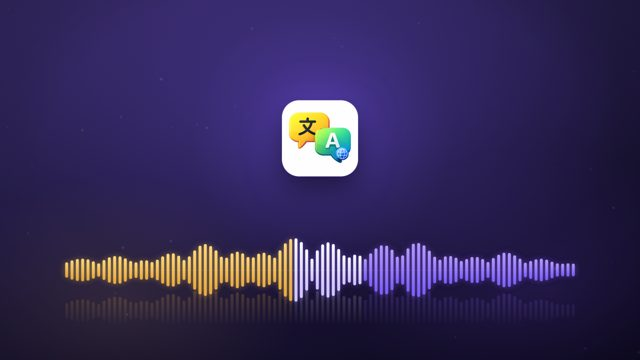

DuoVox Press Kit
Everything you need to write about DuoVox.
Descriptions, key facts, screenshots and images, free to use in editorial coverage, reviews and app directories.
Everything you need to write about DuoVox.
Descriptions, key facts, screenshots and images, free to use in editorial coverage, reviews and app directories.
Live captions and translation for any conversation on your Windows PC.
DuoVox shows both sides of a conversation live: what each person says and its translation, side by side, in four boxes. It captions anything playing on your PC, from Teams, Zoom and Google Meet calls to WhatsApp and YouTube, or the people in the room through your microphone. The Free plan works offline in 30 languages, with no account needed.
Most translation apps make two people take turns: tap a button, speak, pass the phone across. DuoVox puts the whole conversation on one screen instead. Its four-box view shows what each person says and the translation of it, live and side by side, so both people simply talk. It listens either to the sound your PC is playing — a Teams, Zoom or Google Meet call, a WhatsApp call, a YouTube video or a film — or to the people in the room through a microphone.
The Free plan runs entirely on the user’s own computer: 30 languages, no account, no internet connection and no time limit, and on Free the audio never leaves the PC. The paid Standard and Professional plans add cloud AI for higher accuracy, with speech recognised in 33 languages on Standard and 43 on Professional, and translation across 49 languages. Standard adds document translation; Professional adds transcription of audio and video files, subtitle export (SRT and VTT), a glossary for names and specialist terms, and Private Mode, which stops DuoVox writing any record of a session on the PC. Pay-As-You-Go hours top up any plan and never expire.
DuoVox is an assistive communication aid, not a certified or human interpreter. Automated transcription and translation can contain errors, so anything important should be checked; it is not intended for medical, legal or other high-stakes use.
| Developer | David Arthur Software (davidarthur.app), which builds privacy-first apps for Windows and Android, including QuietTime and CCTV Converter |
|---|---|
| Released | 30 September 2026 in the Microsoft Store |
| Platform | Windows 10 (version 1903 or later) and Windows 11, 64-bit. An Android version is in development; no date has been announced. |
| Where to get it | Microsoft Store. Not yet available in the EU and EEA, Turkey, Saudi Arabia or Nigeria. |
| Languages | Translation across 49 languages. Speech recognised in 43 languages on Professional, 33 on Standard and 30 offline on Free. App interface in 23 languages. Full list: duovox.net/languages.html |
| Pricing (USD) | Free plan: $0. Standard: $22.99/month or $249.99/year. Professional: $159.99/month or $899.99 for 6 months. Pay-As-You-Go: $2.99/hour at Standard quality, $6.99/hour at Professional quality, in packs of 1, 10 and 25 hours that never expire. The Microsoft Store charges the equivalent in the customer’s local currency, shown before purchase. |
| Audio sources | Anything the PC plays (no microphone needed), or a microphone |
| Privacy | Free runs fully on the device. On every plan, audio, transcripts and translations are never stored on DuoVox’s own servers. Details: Security and Privacy Policy. |
| Listed on | Microsoft Store · AlternativeTo |
| Website | duovox.net |
| Video | DuoVox promo video on the DuoVox YouTube channel |
| Press contact | enquiries@duovox.net |
Click an image to open the full-size file.










The company logo is on the David Arthur Software press kit.
The text, screenshots and images on this page may be used in editorial coverage, reviews, articles and app directory listings about DuoVox. Please don’t alter the icon, and please describe DuoVox as an assistive tool rather than an interpreter. For anything else, or for an interview or review access, email enquiries@duovox.net.